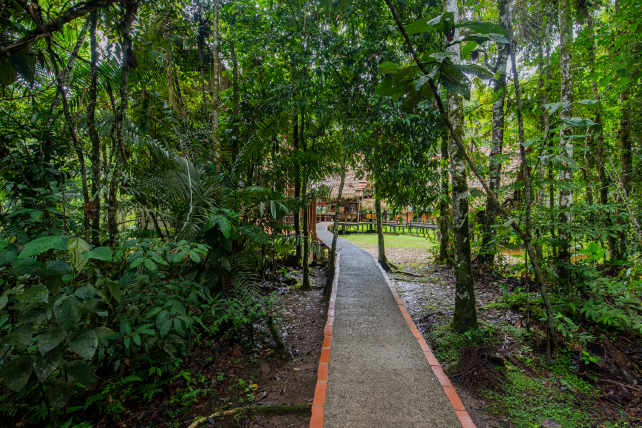

<!DOCTYPE html>
<html lang="en">

<head>

  <meta charset="utf-8">
  <meta name="viewport" content="width=device-width, initial-scale=1, shrink-to-fit=no">
  <meta name="description" content="">
  <meta name="author" content="">

  <title>Programa 1 - Jamu Lodge</title>

  <!-- Bootstrap core CSS -->
  <link href="vendor/bootstrap/css/bootstrap.min.css" rel="stylesheet">

  <!-- Custom fonts for this template -->
  <link href="vendor/fontawesome-free/css/all.min.css" rel="stylesheet">
  <link href="https://fonts.googleapis.com/css?family=Varela+Round" rel="stylesheet">
  <link href="https://fonts.googleapis.com/css?family=Nunito:200,200i,300,300i,400,400i,600,600i,700,700i,800,800i,900,900i" rel="stylesheet">

  <!-- Custom styles for this template -->
  <link href="css/style.css" rel="stylesheet">

  <!-- Fuentes -->
  <link href="https://fonts.googleapis.com/css?family=Roboto&display=swap" rel="stylesheet">
  <link href="https://fonts.googleapis.com/css?family=Montserrat:200,200i,300,300i,400,400i,500,500i,600,600i,700,700i&display=swap" rel="stylesheet">


  
  

</head>

<body id="page-top">

  <script src="https://ajax.googleapis.com/ajax/libs/jquery/2.1.1/jquery.min.js"></script>

<!-- Navigation -->
<nav class="navbar navbar-expand-lg navbar-light fixed-top" id="mainNav">
  <div class="container">

    <a class="navbar-brand js-scroll-trigger" href="index.html"></a>
    <button class="navbar-toggler navbar-toggler-right" type="button" data-toggle="collapse" data-target="#navbarResponsive" aria-controls="navbarResponsive" aria-expanded="false" aria-label="Toggle navigation">
      Menu
      <i class="fas fa-bars"></i>
    </button>
    
    <div class="col-lg-6">

    <div class="col-lg-12 col-md-8 text-centerNav " >
        <div class="header-top-info">
          <a class="datosContact col-lg-4 js-scroll-trigger" href="tel:+23-345-67890">Toll with Us <span>+ 593 2 222 0614</span></a>
          <a class="datosContact col-lg-4 js-scroll-trigger" href="#signup"><i class="fa fa-envelope mr-2"></i><span>Contact Us</span></a>
          <a class="datosContact col-lg-4 js-scroll-trigger" href="indexEng.html"></a>
        </div>
      </div>

    <div class="collapse navbar-collapse" id="navbarResponsive">
      <ul class="col-lg-12 navbar-nav ml-auto">
        <li class="nav-item">
          <a class="nav-link js-scroll-trigger" href="#about">PROGRAMAS</a>
        </li>
        <li class="nav-item">
          <a class="nav-link js-scroll-trigger" href="lodge.html">LODGE</a>
        </li>
       
        
        <li class="nav-item">
          <a class="nav-link js-scroll-trigger" href="reservas.html">BOOK NOW</a>
        </li>
      </ul>
    </div>
  
  </div>

  </div>
</nav>

  <!-- Header -->
  <header class="masthead4">
    <div class="container d-flex h-100 align-items-center">
      <div class="mx-auto">
        <h5 id="Programas">Programa</h5>
        <h1 class="Programas">3 Días - 2 Noches</h1>
        
      </div>
    </div>
  </header>

  <!-- About Section -->
  <section id="about" class="about-section text-center">
  
  
   
  </section>

  


  
  <!-- Projects Section -->
  <section id="projects" class="projects-section bg-light">
    <div class="container">

      <!-- Featured Project Row -->
      <div class="row align-items-center no-gutters mb-4 mb-lg-5">
        <div class="col-xl-8 col-lg-7">
          
        </div>
        <div class="col-xl-4 col-lg-6">
          <div class="featured-text text-center text-lg-left">
            <h4 class="lodgeH4">Día 1</h4>
            <p class="text-black-50 mb-0">REn la mañana la recepción será en la ciudad de Lago Agrio desde donde tomaremos el transporte terrestre, viajaremos por aprox. 2 horas hacia la entrada de la Reserva  Cuyabeno y al llegar  a este punto tendremos un delicioso box lunch.Posteriormente, nuestro guía naturalista brindará información acerca de...</p>

            <!-- Button trigger modal -->
            <button id="buttonModal" type="button" class="btn btn-primary" data-toggle="modal" data-target="#exampleModalLong">
              VER MÁS
            </button>

            <!-- Modal -->
            <div class="modal fade" id="exampleModalLong" tabindex="-1" role="dialog" aria-labelledby="exampleModalLongTitle" aria-hidden="true">
              <div class="modal-dialog" role="document">
                <div class="modal-content">
                  <div class="modal-header">
                    <h5 class="modal-title" id="exampleModalLongTitle">Día 1</h5>
                    <button type="button" class="close" data-dismiss="modal" aria-label="Close">
                      <span aria-hidden="true">&times;</span>
                    </button>
                  </div>
                  <div id="ServProgram" class="modal-body">
                    En la mañana la recepción será en la ciudad de Lago Agrio desde donde tomaremos el transporte terrestre, viajaremos por aproximadamente 2 horas hacia la entrada de la Reserva  Cuyabeno y al llegar  a este punto tendremos un delicioso box lunch.
                    <br><br>
                    Posteriormente, nuestro guía naturalista brindará información acerca de la Reserva y recomendaciones importantes para comenzar la navegación por dos horas en el río Cuyabeno rumbo a Jamu Lodge.
                    <br><br>
                    Durante el paseo en canoa se obtendrá un primer vistazo de la selva y observaremos diferentes tipos de aves como los caciques, oropéndolas y el prehistórico pájaro Hoatzin; también se podrá ver una variedad de monos y otros animales típicos de la selva en función del tiempo y las condiciones meteorológicas.
                    <br><br>
                    Llegaremos a Jamu Lodge alrededor de las 4:30 pm, en ese momento nuestro staff se encargará de dar la bienvenida y mostrar las habitaciones a nuestros pasajeros para que puedan relajarse.
                    <br><br>
                    Tras haber descansado un poco y recuperar energías, dejaremos el lodge por un momento e  iremos hacia la Laguna Grande, donde podremos presenciar una hermosa puesta de sol.
                    <br><br>
                    Luego de esta maravillosa experiencia regresaremos al Lodge para disfrutar de la cena, así terminaría nuestro primer día en la selva, relajándonos  en una hamaca o tomando una copa en el bar.
                  </div>
                  <div class="modal-footer">
                    <button type="button" class="btn btn-secondary" data-dismiss="modal">Close</button>
                    
                  </div>
                </div>
              </div>
            </div>  
            <!-- fin modal -->


          </div>
        </div>
      </div>

      <!-- Featured Project Row -->
      <div class="row align-items-center no-gutters mb-4 mb-lg-5">
        
        <div class="col-xl-4 col-lg-6">
          <div class="featured-text2 text-center text-lg-left">
            <h4 class="lodgeH4">Día 2</h4>
            <p class="text-black-50 mb-0">Iniciaremos el día con un rico desayuno para luego emprender una caminata por aprox. 3 a 4 horas por el bosque primario, el guía nos explicará sobre un bosque tropical, y plantas medicinales; además, durante ésta actividad podremos observar grandes árboles como el ceibo o pequeños insectos como hormigas. Después de ésta aventura retornaremos al lodge para deleitarnos con el almuerzo...</p>

            <!-- Button trigger modal -->
            <button id="buttonModal" type="button" class="btn btn-primary" data-toggle="modal" data-target="#exampleModalLong2">
              VER MÁS
            </button>

            <!-- Modal -->
            <div class="modal fade" id="exampleModalLong2" tabindex="-1" role="dialog" aria-labelledby="exampleModalLongTitle" aria-hidden="true">
              <div class="modal-dialog" role="document">
                <div class="modal-content">
                  <div class="modal-header">
                    <h5 class="modal-title" id="exampleModalLongTitle">Día 2</h5>
                    <button type="button" class="close" data-dismiss="modal" aria-label="Close">
                      <span aria-hidden="true">&times;</span>
                    </button>
                  </div>
                  <div id="ServProgram" class="modal-body">
                    Día 2<br>
                    Iniciaremos el día con un rico desayuno para luego emprender una caminata por aprox. 3 a 4 horas por el bosque primario, el guía nos explicará sobre un bosque tropical, y plantas medicinales; además, durante ésta actividad podremos observar grandes árboles como el ceibo o pequeños insectos como hormigas. 
                    <br><br>
                    Después de ésta aventura retornaremos al lodge para deleitarnos con el almuerzo. Tendremos un momento para descansar y en la tarde saldremos a ver las hermosas mariposas y a nadar en la laguna, si es posible tendremos la oportunidad observar a los hermosos delfines rosados y disfrutaremos la impresionante caída de sol. 
                    <br><br>
                    Retornamos al campamento para cenar y luego realizaremos una actividad nocturna enfocada a la búsqueda de caimanes en las orillas del río.
                    <br><br>
                    Si optaste por visitarnos por 3d/2n, por favor es necesario que tomes en cuenta la siguiente nota:
                    <br><br>
                    NOTA IMPORTANTE:
                    <br><br>
                    En el tour de 3 Días / 2 Noches, las actividades a realizarse durante el segundo día podrán variar ya que podremos llevar a cabo las que se encuentran descritas como “DIA 2” o aquellas mencionadas en “DIA 3”, es decir, hay dos posibilidades para este segundo día, pero esta elección será a cargo de nuestro guía dependiendo de la organización que ya tengamos con los grupos.
                  </div>
                  <div class="modal-footer">
                    <button type="button" class="btn btn-secondary" data-dismiss="modal">Close</button>
                    
                  </div>
                </div>
              </div>
            </div>

          </div>
        </div>
        <div class="col-xl-8 col-lg-6">
          
        </div>
      </div>


      <!-- Featured Project Row -->
      <div class="row align-items-center no-gutters mb-4 mb-lg-5">
        <div class="col-xl-8 col-lg-7">
          
        </div>
        <div class="col-xl-4 col-lg-6">
          <div class="featured-text text-center text-lg-left">
            <h4 class="lodgeH4">Día 3</h4>
            <p class="text-black-50 mb-0">En el tercer y último día del tour 3d/2n, temprano en la mañana antes del desayuno, tendremos una excursión de observación de aves que es opcional y dependerá mucho de las condiciones climáticas; al volver al lodge tendremos un rico desayuno y a continuación el transfer de retorno a Lago Agrio donde finaliza el recorrido con nosotros. Por otra parte, si decidiste quedarte con...</p>

            <!-- Button trigger modal -->
            <button id="buttonModal" type="button" class="btn btn-primary" data-toggle="modal" data-target="#exampleModalLong3">
              VER MÁS
            </button>

            <!-- Modal -->
            <div class="modal fade" id="exampleModalLong3" tabindex="-1" role="dialog" aria-labelledby="exampleModalLongTitle" aria-hidden="true">
              <div class="modal-dialog" role="document">
                <div class="modal-content">
                  <div class="modal-header">
                    <h5 class="modal-title" id="exampleModalLongTitle">Día 3</h5>
                    <button type="button" class="close" data-dismiss="modal" aria-label="Close">
                      <span aria-hidden="true">&times;</span>
                    </button>
                  </div>
                  <div id="ServProgram" class="modal-body">
                    En el tercer y último día del tour 3d/2n, temprano en la mañana antes del desayuno, tendremos una excursión de observación de aves que es opcional y dependerá mucho de las condiciones climáticas; al volver al lodge tendremos un rico desayuno y a continuación el transfer de retorno a Lago Agrio donde finaliza el recorrido con nosotros.
                    <br><br>
                    Por otra parte, si decidiste quedarte con nosotros por 4d/3n a continuación podrás conocer como continúan las actividades en Jamu Lodge con el itinerario del día 3.
                    <br><br>
                    Después de desayunar, partimos en una canoa río abajo en un trayecto aprox. de una hora a visitar una familia de la comunidad Tarapuy en donde seremos participes en la preparación de un pan tradicional de yuca conocido en la zona como Casabe. 
                    <br><br>
                    Además, durante el proceso podremos aprender a usar los materiales y utensilios de la selva para hacer el pan, en esta actividad ocuparemos todo el día, retornando al Lodge aproximadamente a las dos de la tarde.
                    <br><br>    
                    Después disfrutar del almuerzo podremos relajarnos y descansar; para terminar el día tendremos una corta caminata por el bosque primario enfocada a observar insectos nocturnos, como arañas, gekos o escorpiones, y a escuchar los ruidos y sonidos de la noche. 
                  </div>
                  <div class="modal-footer">
                    <button type="button" class="btn btn-secondary" data-dismiss="modal">Close</button>
                    
                  </div>
                </div>
              </div>
            </div>  
            <!-- fin modal -->


          </div>
        </div>
      </div>


      <button id="reservasButton" type="button" class="btn btn-primary" >
        <a href="reservas.html">Reservas</a>
      </button>


  </section>


  

    

  <iframe src="https://www.google.com/maps/embed?pb=!1m18!1m12!1m3!1d3989.7984712325856!2d-78.48121358596188!3d-0.18073063546844195!2m3!1f0!2f0!3f0!3m2!1i1024!2i768!4f13.1!3m3!1m2!1s0x91d59a811c368adf%3A0xec8ed68ca5af3ad9!2sJamu%20Lodge!5e0!3m2!1ses!2sar!4v1578094817933!5m2!1ses!2sar" width="100%" height="300" frameborder="0" style="border:0;" allowfullscreen=""></iframe>

  


  

  <!-- Contact Section -->
  <section  class="contact-section bg-black">
    <div class="container">

      <div class="row">

        <div class="col-lg-6 col-md-4 mb-3 mb-md-0">
          
            <div class="card-bodyF text-center">
              
              <h3 class="text-uppercase m-0">Tamayo N24-96 Y Foch</h3>
              <div class="small text-black-50">Edición Reina Isabel, Of. 1 P.B., Quito-Ecuador</div>
              <br>
              
              <div class="small text-black-50">E-mail: ecuadorverdepais@hotmail.com</div>
              <div class="small text-black-50">Teléfono: (00593) 02 222 0614.</div>
              <div class="small text-black-50">Celulares: (00593) 0999717295/0989810683/0984431572.</div>
            </div>
          
        </div>

        <form id="signup"  class="col-lg-6"> 
          <h4>Contactenos</h4>
          <div id="contactenos" class="form-group col-lg-6">
            <input type="text" class="form-control" id="exampleFormControlInput1" placeholder="Nombre">
          </div>
          <div id="contactenos" class="form-group col-lg-6">
            <input type="text" class="form-control" id="exampleFormControlInput1" placeholder="Apellido">
          </div>
          <div id="contactenos" class="form-group col-lg-6">
            <input type="number" class="form-control" id="exampleFormControlInput1" placeholder="Teléfono">
          </div>
          <div id="contactenos" class="form-group col-lg-6">
            <input type="email" class="form-control" id="exampleFormControlInput1" placeholder="Email">
          </div>
         
          
          <div id="contactenos" class="form-group col-lg-12">
            <textarea class="form-control" id="exampleFormControlTextarea1" rows="3" placeholder="Mensaje" ></textarea>
          </div>
          <button id="enviar" type="button" class="btn btn-secondary btn-lg" disabled><a href="">Enviar</a></button>

          </form>

    </div>
  </section>

  <!-- Footer -->
  <footer class="small text-center2">
    
    
    
    <div class="copy">
      <p class="copyFooter">Jamu Lodge 2020 - Todos los derechos reservados</p>
      
      <div class="social d-flex ">
        <a href="https://www.instagram.com/jamuecolodge" class="mx-2">
          <i class="fab fa-instagram"></i>
        </a>
        <a href="https://www.facebook.com/jamuecolodge/" class="mx-2">
          <i class="fab fa-facebook-f"></i>
        </a>
        <a href="https://www.tripadvisor.com/Profile/jamuecolodge" class="mx-2">
          <i class="fab fa-tripadvisor"></i>
        </a>
        <a href="https://www.booking.com/searchresults.es.html?label=gen173nr-1DCAEoggI46AdIM1gEaAyIAQGYAQq4AQfIAQzYAQPoAQGIAgGoAgO4Auub3fAFwAIB&sid=acf1236f002b22af13f5669b7579dd2c&sb=1&src=index&src_elem=sb&error_url=https%3A%2F%2Fwww.booking.com%2Findex.es.html%3Flabel%3Dgen173nr-1DCAEoggI46AdIM1gEaAyIAQGYAQq4AQfIAQzYAQPoAQGIAgGoAgO4Auub3fAFwAIB%3Bsid%3Dacf1236f002b22af13f5669b7579dd2c%3Bsb_price_type%3Dtotal%26%3B&sr_autoscroll=1&ss=Jamu+Lodge%2C+Puerto+Mont%C3%BAfar%2C+Amazonas%2C+Ecuador&is_ski_area=&checkin_year=2020&checkin_month=1&checkin_monthday=14&checkout_year=2020&checkout_month=1&checkout_monthday=15&group_adults=2&group_children=1&no_rooms=2&age=12&b_h4u_keep_filters=&from_sf=1&ss_raw=jamulodge&ac_position=0&ac_langcode=es&ac_click_type=b&dest_id=434253&dest_type=hotel&place_id_lat=-0.0348955371264284&place_id_lon=-76.1644524335861&search_pageview_id=fa6470755c4f0008&search_selected=true&search_pageview_id=fa6470755c4f0008&ac_suggestion_list_length=1&ac_suggestion_theme_list_length=0" class="mx-2">
          Booking.com
        </a>
      </div>

      <a class="copyFooter" href="#">Terminos y condiciones</a>
    </div>

  </footer>

  <!-- Bootstrap core JavaScript -->
  <script src="vendor/jquery/jquery.min.js"></script>
  <script src="vendor/bootstrap/js/bootstrap.bundle.min.js"></script>

  <!-- Plugin JavaScript -->
  <script src="vendor/jquery-easing/jquery.easing.min.js"></script>

  <!-- Custom scripts for this template -->
  <script src="js/grayscale.min.js"></script>

</body>

<script>

  // esta parte, permite que se ejecute el codigo cuando se halla cargado la pagina
  $(function() {
    // esta parte es la que controla cuando se mueve el scroll y ejecuta una función
    $(document).scroll(function() {
      // aca se pregunta si el scroll se movio de pa bajo.
      if ($(this).scrollTop() > 1) {
        // esta parte cambia el atributo "src" de la etiqueta "img" 
        $('#logo').attr('src', 'img/logoJAMULODGEverde.png')
      }
      if ($(this).scrollTop() < 1) {
        $('#logo').attr('src', 'img/logoJamu.png');
      }
    });
  });
  
  </script>


</html>
